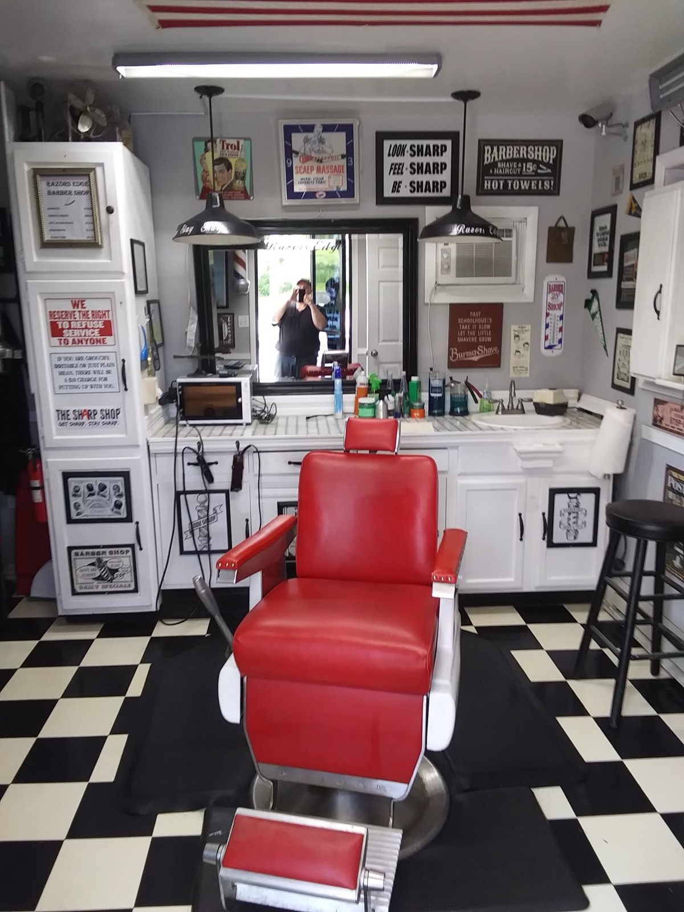
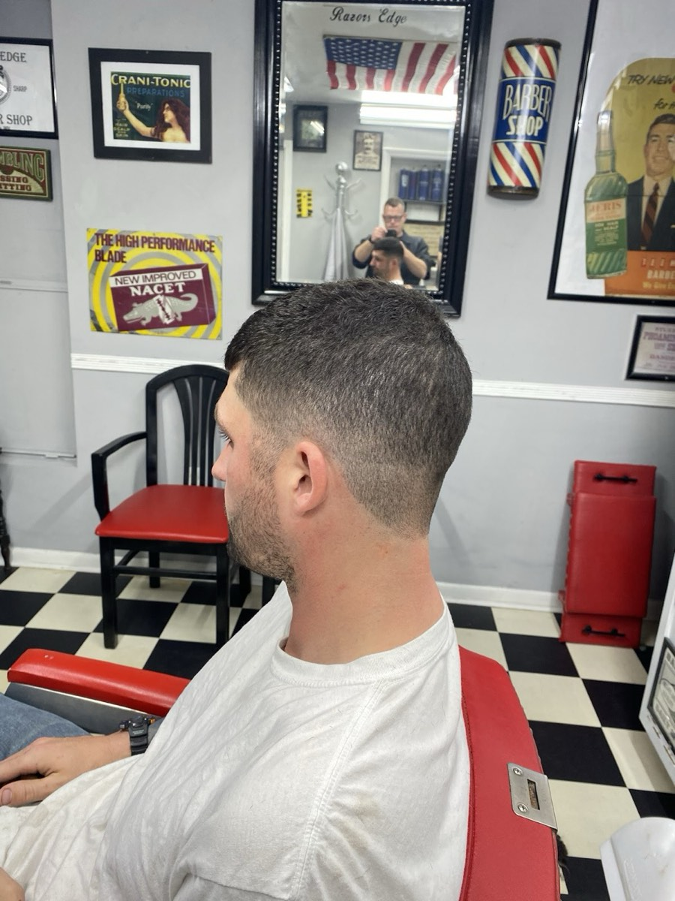
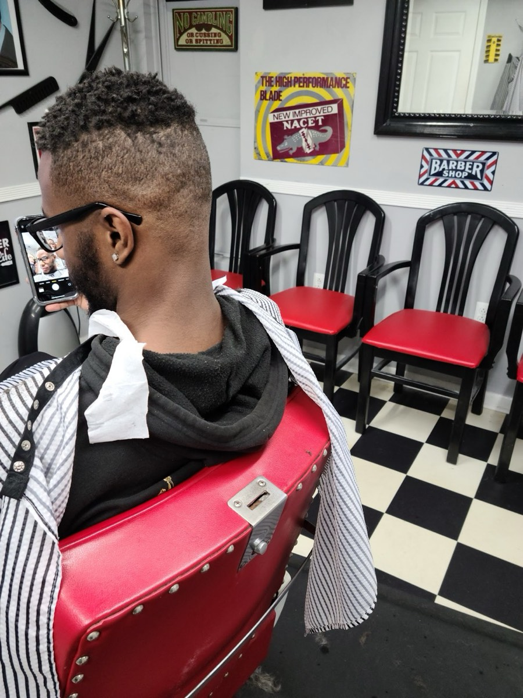
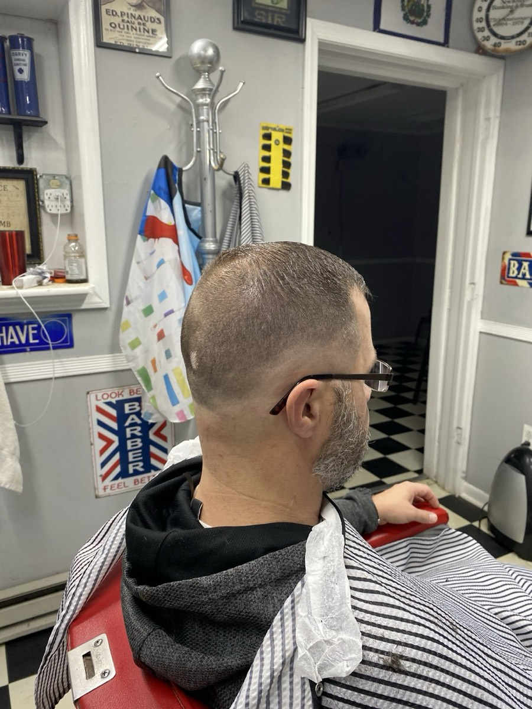
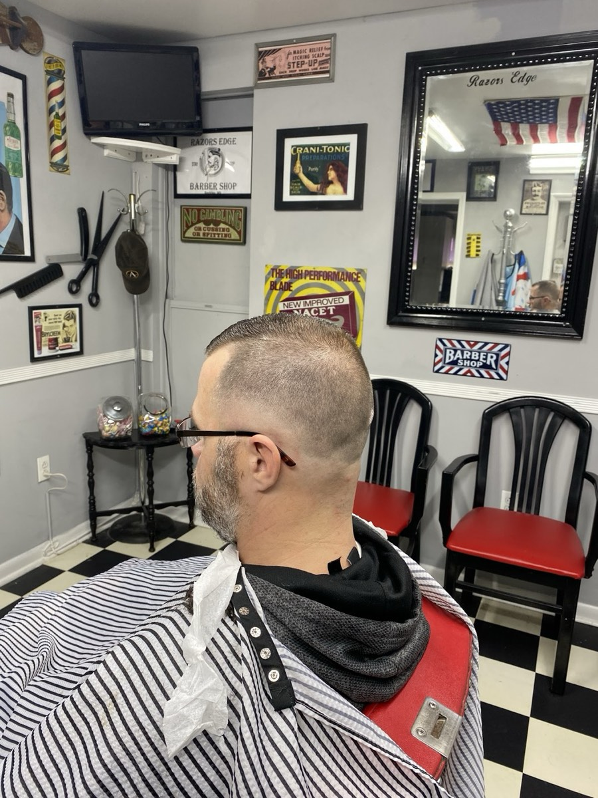
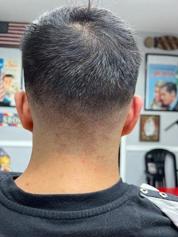

01 Barber shop · 602 S Eisenhower Dr, Beckley
Stay sharp, Beckley.
A classic two-chair barber shop with a checkerboard floor and red chairs. Skin fades, flat tops, beard trims and the straight-razor hot towel shave, by Brad Runyon, owner and master barber stylist.
Tue–Fri 10–6 · Sat 9–4

02 Services
Cuts, shaves & beards.
Everything a real barbershop should do, done one client at a time. Ask Brad what suits your hair; he'll talk it through before he starts.
Haircuts & fades
Skin fades, bald fades with a hard part, low and mid fades and flat tops.
/02Hot towel shave
The straight-razor face shave with a hot towel and aftershave. Head shaves too.
/03Beard trims
Faded and trimmed to suit you, from a neat tidy-up to taming a full, bushy beard.
/04Kids' cuts
First haircuts included. Patient with little ones and kids who find haircuts hard.
/05Women's cuts
Customers say Brad does a good job with women's hair, too. Just ask.
Barber chairs on the floor
Open Tuesday to Saturday
Open hours every week
Doors open Tuesday to Friday

03 The barber
A real barbershop, by Brad.
Razors Edge is Brad Runyon's shop: owner, master barber stylist and, by every account, the guy who keeps the conversation going while he works.
The walls are covered in old barbershop signs and tonic ads, the floor is black and white checkerboard, and the chairs are red. Regulars call Brad a down-to-earth guy who is easy to talk to, and the shop exactly what a barbershop should be: a nostalgic feel with a modern touch. Brad says it best himself: the best thing about Razors Edge is the people who come through the door.
- Wheelchair-accessible entrance, seating & restroom
- Free parking lot
- Credit, debit & tap-to-pay
- Good for kids
- LGBTQ+ friendly
- Closed Sunday & Monday
04 The shop
Checkerboard, chrome & red.
Photos from Brad's own Google profile. Lots of barbershop history to look at while you wait your turn.





05 Reviews
Word around Beckley.
A few words from customers' Google reviews, lightly shortened.
Absolutely the best haircut (medium bald fade w/hard part) I have gotten in the past 6 years… Great conversation, comfortable relaxing setting.
Jay · Google review
The only barber in Beckley that will give you a clean, hot shave. Very professional… finished with a hot towel and good aftershave.
Derek L. · Google review
Lots of barbershop history to peruse while you are getting your ears lowered. One of the few places left that still uses a straight razor for trims and face shaving.
Greg R. · Google review
This is exactly what a barbershop should be… this nostalgic feel with modern touch.
Jon D. · Google review
As an army veteran, I love consistency and that is exactly what you'll find here. Same price, same quality every single time.
Nathaniel R. · Google review
Brad did an amazing job. Full service trim with hot towel shave. Courteous, good conversation and he took his time.
James N. · Google review
Source: Google reviews of Razors Edge by Brad, quoted with minimal shortening (…).
06 Visit
Come get sharp.
Tue–Fri 10–6 · Sat 9–4
| Tuesday | 10 AM – 6 PM |
|---|---|
| Wednesday | 10 AM – 6 PM |
| Thursday | 10 AM – 6 PM |
| Friday | 10 AM – 6 PM |
| Saturday | 9 AM – 4 PM |
| Sunday & Monday | Closed |